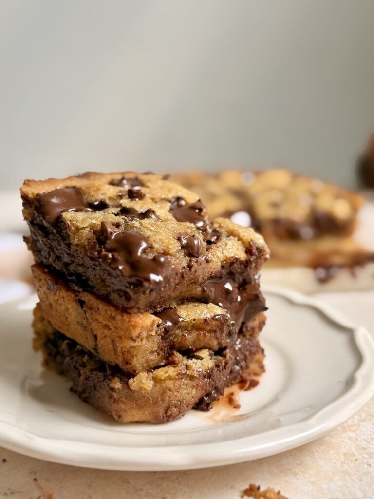

Brown Butter Chocolate Chip Cookie Bars

Description
Deeply nutty brown butter, two kinds of sugar,
melty semi-sweet chocolate chunks and that secret touch of instant coffee that makes
the whole thing taste like the best cookie bar you have ever had.
Ingredients
- 3/4 cup + 1 & 1/2 tbsp unsalted butter (192g)
- 1 tbsp milk powder (optional)
- 1/2 cup white granulated sugar (100g)
- 2/3 cup soft light brown sugar (125g)
- 1 large egg + 1 egg yolk
- 2 cups all-purpose flour (250g)
- 1 tsp corn starch
- 1 tsp instant coffee powder (optional)
- 3/4 tsp baking powder
- 1/2 tsp fine salt
- 7 oz (200g) semi-sweet chocolate chunks
Directions
- Preheat your oven to 175°C
and line your pan with parchment paper leaving an overhang on the sides
- Melt the butter in a saucepan over medium heat, add milk powder, stirring occasionally,
until the milk solids turn deep amber and the butter smells nutty. Pour into a large bowl
and leave to cool for 10 to 15 minutes.
- Whisk both sugars into the cooled brown butter until smooth and glossy.
- Add the egg and egg yolk and whisk for a full minute until the mixture is thick, pale and ribbon-like.
- Add the flour, corn starch, instant coffee powder, baking powder and salt all at once.
Fold gently until just a few streaks of flour remain.
- Add the chocolate chunks and fold through until the last flour streaks disappear
and the chocolate is evenly distributed throughout the dough.
- Press the dough evenly into the prepared pan and bake at 175°C for 18 to 20 minutes
until golden on top but the centre still looks just slightly underdone.
Cool completely in the pan before slicing.
- Enjoy!